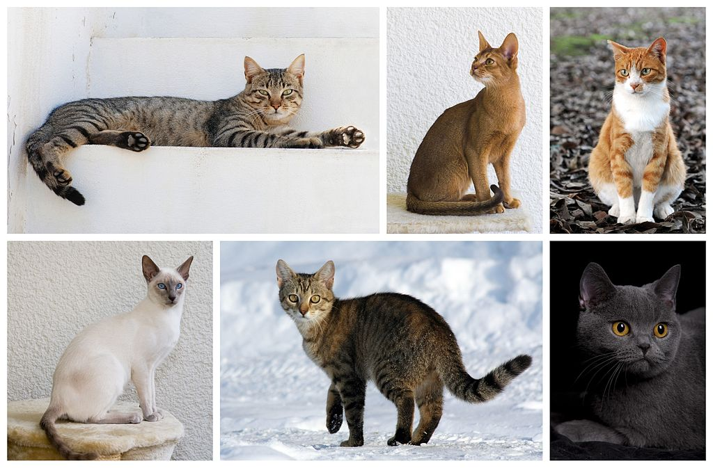

The cat (Felis catus) is a domestic species of a small carnivorous mammal. It is the only domesticated species in the family Felidae and is often referred to as the domestic cat to distinguish it from the wild members of the family. A cat can either be a house cat, a farm cat or a feral cat; the latter ranges freely and avoids human contact.[5] Domestic cats are valued by humans for companionship and their ability to kill rodents. About 60 cat breeds are recognized by various cat registries.
Read more
The dog or domestic dog is a domesticated descendant of the wolf which is characterized by an upturning tail. The dog is derived from an ancient, extinct wolf, and the modern wolf is the dog's nearest living relative. The dog was the first species to be domesticated,[9][8] by hunter–gatherers over 15,000 years ago, before the development of agriculture.
Read more